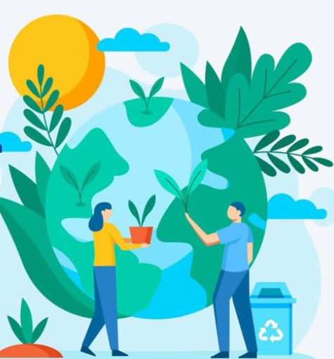

Responsabilidad compartida

Cuidar el ambiente es responsabilidad de todos. La sostenibilidad busca proteger los recursos naturales y satisfacer nuestras necesidades sin perjudicar a las futuras generaciones. Con acciones simples, como reciclar, ahorrar agua y energía y reducir los residuos, podemos ayudar a construir un planeta más saludable.
Importancia del cuidado
Cuidar el ambiente es fundamental para lograr una vida más saludable y un futuro mejor. Por eso, es importante relacionar el cuidado de la naturaleza con la sostenibilidad, buscando formas de utilizar los recursos de manera responsable y reducir el impacto que generamos en el planeta.
Acciones cotidianas
El cuidado del ambiente implica adoptar acciones que ayuden a reducir el daño que provocamos en la naturaleza. Algunas de las más importantes son separar y reciclar los residuos, reducir el uso de plástico, ahorrar agua y energía, y mantener limpios los espacios públicos.
El rol de la sostenibilidad
La sostenibilidad también es fundamental, porque busca utilizar los recursos naturales de manera responsable. Esto significa aprovechar lo que necesitamos sin desperdiciar ni agotar los recursos del planeta. De esta manera, podemos satisfacer nuestras necesidades actuales y al mismo tiempo, cuidar el ambiente para las futuras generaciones.
Compromiso colectivo
Cada persona puede contribuir realizando pequeños cambios en su vida cotidiana. Si todos asumimos responsabilidad y trabajamos juntos, podemos disminuir la contaminación y construir un ambiente más saludable y sostenible.